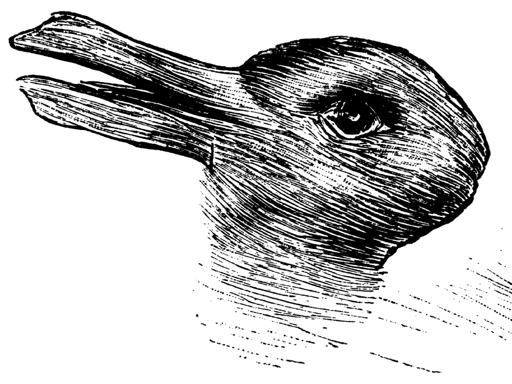

Vision-Language Asymmetry in Bistable Image Captioning
Arohan Agate
ICML 2026 Workshop on Philosophy and Machine Learning solo author
Sparse autoencoders show that LLaVA-1.6’s vision encoder represents both aspects of bistable images simultaneously while the language decoder commits to one. Causal steering localizes the seeing-as bottleneck to the language model.